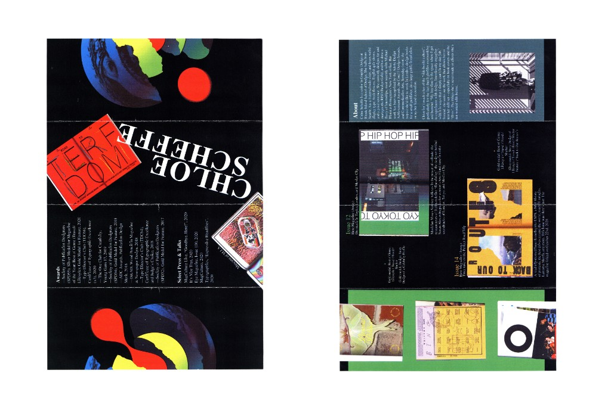
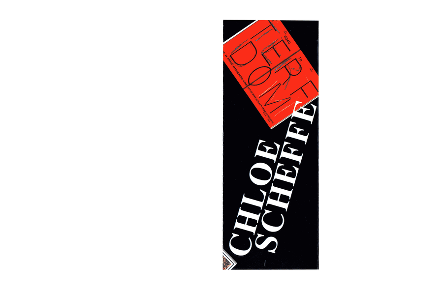
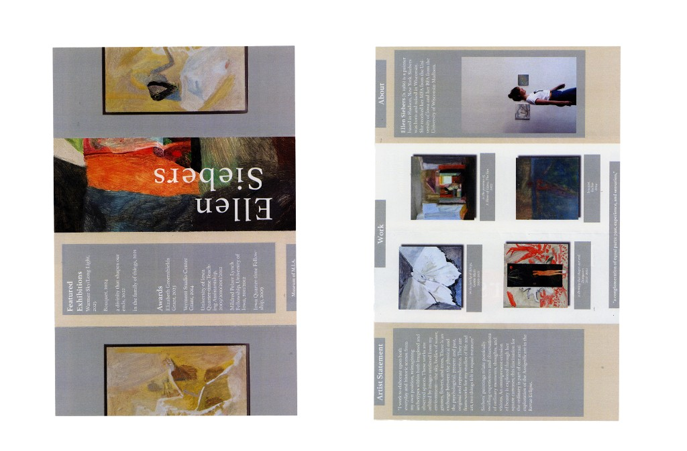
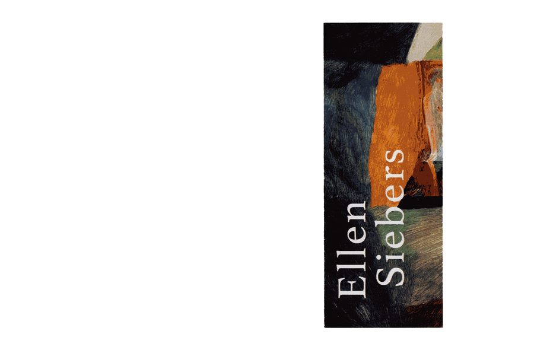
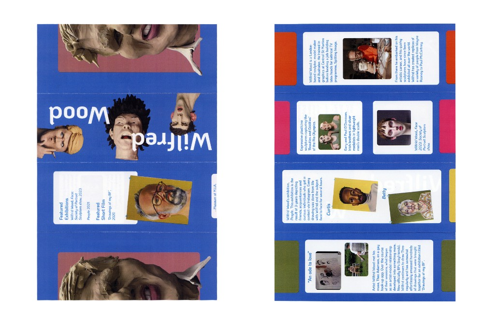
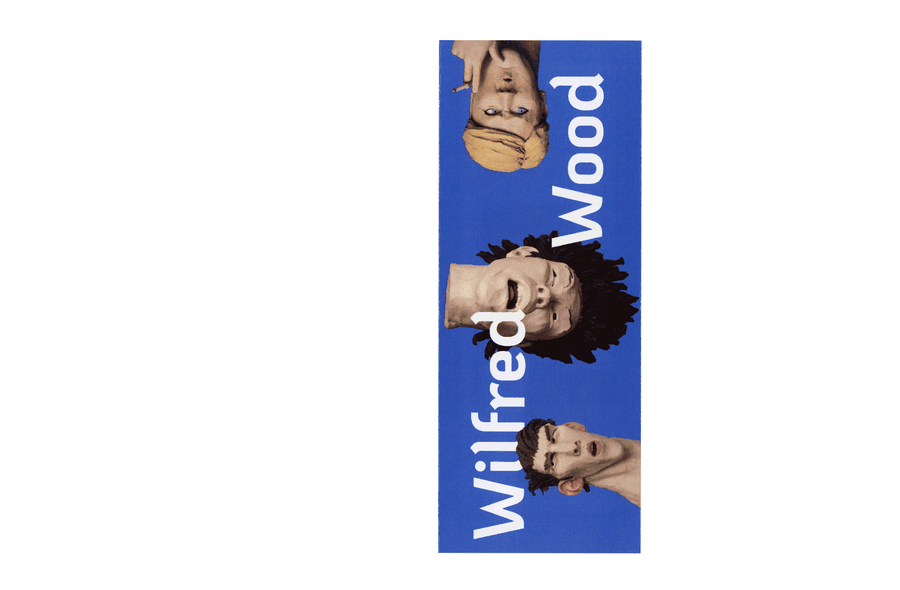

artist pamphlets
pamphlets created to showcase different designers and their work – these three pamphlets had to have a common aesthetic despite being different designers.

Chloe Scheffe
Outside & inside spread
Chloe Scheffe is a senior in Graphic Design at Rhode Island School of Design. She currently designs for and manages the RISD Design Guild, and has done a flurry of internships, most recently with Michael Bierut at Pentagram’s New York office. Her work has been recognized by the Adobe Design Achievement Awards, the Core77 Design Awards, and Communication Arts.


Ellen Siebers
Outside & inside spread
Ellen Siebers (b. 1986) is a painter based in Hudson, New York. Siebers was born and raised in Wisconsin. She received her MFA from the University of Iowa and her BFA from the University of Wisconsin-Madison.


Wilfrid Wood
Outside & inside spread
Wilfrid Wood is a London-based sculptor, model maker and illustrator. He trained in graphics at Central St Martins before landing a job building latex heads for satirical TV programme, Spitting Image. From there he embarked on his artistic career, and his quirky sculptures have since been exhibited all over the world.

